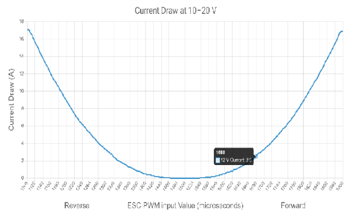
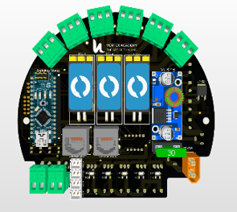
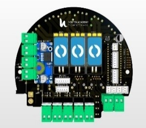
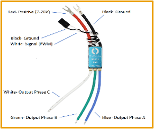

Using pluggable wire connections, the
underwater electrical system is designed to
be straightforward, dependable, and simple
to install. To minimize PCB size and
accommodate large components like the
Raspberry Pi, the electrical team
specifically designed and produced a
double-layer PCB
1. Power Distribution and Calculations
The power supply from the 12-VDC source is
directed through a 25 Ampere fuse located at
the surface-end of the tether before
reaching the onboard electrical system.
However, fluctuations in power caused by
voltage drop across the tether during
increased loads disrupt the functioning of
the cameras. To address this issue and
stabilize the voltage, a repurposed
buck-boost converter -fig (1) from Vortex
Academy was integrated into the system.
Notably, 12 volts are utilized to power
various components such as DCVs, LEDs, ESCs,
Arduino Nano, and cameras, while 5 volts
from the Buck Converter -fig (2) are
allocated to power the Raspberry Pi and
Pixhawk.
Particular emphasis is placed on
propulsion
control due to its significant impact on
overall power consumption. To effectively
manage power consumption, thruster movement
is limited to one movement at a time, with
speed limited to1680 µs -fig(3) input to
the ESC. This required the development of a
software locking system to regulate the
current drawn by the thrusters. Basically,
the maximum power consumption is limited to
352.56 watts, with a peak current of
17.88 amps. Therefore,
although the required fuse is calculated to
be 23.244 amps based on a
safety factor of 1.3, a
25ampfuse is still
used as a precaution. Detailed power
distribution is provided in Table 3.
Figure 1:
buck-boost & Buck
converter

Figure 2:
Thruster Power Curve by Blue
Robotics
Component
Voltage (Volts)
Max current (Amperes)
Max power (Watts)
Quantity
Total Max power (Watts)
Total max current
(Amperes)
T200
12
2.5
30
6
180
15
Bilge pump
12
10
120
1
120
10
Raspberry pi 4
5
3
15
1
15
3
Pixhawk
5
3
15
1
15
3
CCTV Cameras
12
0.275
3.3
4
13.2
1.1
Low Light Camera
12
0.22
2.64
1
2.64
0.22
DCV
12
0.28
3.36
2
6.72
0.56
Total
Power
352.56 Watts
Maximum
Power Consumption
232.56 Watts
Actual
Current Calculations
17.88 Amperes
Fuse Calculation:
ROV Overcurrent Protection= ROV Full Load
Current * 130%
Fuse Rating = [ (Blue Robotics
Thrusters) +
other system] *130%
Fuse Rating (horizontal thrusters) =
[(4*2.5
Amps) +(7.88 Amps)] * 130%= 23.244 Amps
Fuse Rating (vertical thrusters) =
[(2*2.5
Amps) +(7.88 Amps)] * 130%= 16.744 Amps
Maximum Fuse Rating = 25 Amps
The implementation of the software
interlocking system, which imposes
individual speed limits for each thruster,
ensures that maximum power consumption is
never attained. Moreover, this mechanism
prevents all six thrusters from operating
simultaneously at maximum speed. As a
result, the actual maximum current draw is
17.88 amps.
Main PCB
Last year, the electrical team
embarked
on
developing a double-layer PCB -fig
(24)
to
optimize space utilization in the
bottom
side electrical system of our ROV.
Our
primary goal was to accommodate all
essential components while
maintaining
operational efficiency. Central to
this
Endeavor was the integration of
protective
measures, including a fuse, aimed at
safeguarding the PCB from
overcurrent
during
system operation. This meticulously
designed
board seamlessly incorporates vital
elements
such as the Arduino, ESCs, and
IRF540
MOSFETS, ensuring robust signal
connections
and efficient power delivery.
Figure
4:Previous PCB
To enhances our design and
accommodate
potential system enhancements or
upgrades,
we recently integrated a Raspberry
Pi 4
and
a Pixhawk into the PCB. This
addition
aims
to expand the capabilities of our
ROV,
improving its computational prowess
and
autonomy. Before finalizing the
Gerber
Files
for production, we conducted
comprehensive
testing of our updated design using
a
prototype PCB. This rigorous testing
phase
was essential to validate the
seamless
functionality and compatibility of
the
PCB
with the newly integrated
components.
Furthermore, we implemented a
circular
design
for the PCB -fig (26), and
strategically
positioned the components across the
two
layers to optimize space utilization
within
the enclosure. This innovative
approach
not
only minimizes spatial constraints
but
also
enhances the overall compactness and
efficiency of the electrical system
within
the ROV.

Figure
4:
Front Face of
PCB

Figure
5:
Back Face of
PCB
Control System
1. Thruster’s control
and Thrust force.
The control of the six T200 thrusters
is facilitated by six electronic
speed controllers (ESCs) -fig (27).
In this configuration, the Pixhawk
sends pulse width modulation (PWM)
signals to regulate both the speed
and direction of the thrusters. To
simplify the internal wiring layout,
the ESCs were incorporated onto the
PCB, enabling them to receive both
signal and power directly from the
board.

Figure
4: ESCs
2.
DCV control:
We utilize IRF540 MOSFETs to control
the two
5/2 DCV, managing the high power of
the
loads. These MOSFETs receive signals
from
the pixhawk Auxiliary pins. To
prevent
overheating, the temperature of the
MOSFETs
-fig (27), was closely monitored and
discounted. both 5/2 DCVs are reused
to
regulate the airflow to the
pneumatic
cylinder connected to the clutch and
the
other one for our rotational gripper
IRF640 MOSFET temperature
calculations: ID = 0.28 A
RDS (on) = 0.18 ohm
Pdissipated = RDS (on) x ID 2
=
0.014
Watt
Rth j-a = 62 °C/Watt
∆T = Tth j-a x Pdissipated
=0.87
°C
Figure
4: MOSFET Circuit
Tether
Communication
Data transmission from the station to
the ROV is facilitated by two
Category 6 (CAT6) Ethernet cables,
each comprising four twisted-pair
cables -fig (28). One of these
cables links the RJ45 port to the
Raspberry Pi-RJ45 and is responsible
for carrying communication signals.
Meanwhile, the other cable connects
to the remaining four. Our choice of
CAT6 cables is based on their serial
transmission rate of 250 kbps
(kilobits per second)
Figure
4: Tether Diagram
Power
Utilizing the AWG wire sizing chart, we
selected a 6 AWG (4 mm) power cable to
mitigate voltage drop across the tether ends
and ensure a stable voltage supply to the
system. Given our current limit of 23.244
amps, our wire selection was determined
through the following calculations:
Max power Consumption = 232.56watts
Max Current = 17.88 Ampere
Fuse Calculations:
17.88 X 1.3 = 23.244Ampere
Fuse used = 25 Ampere